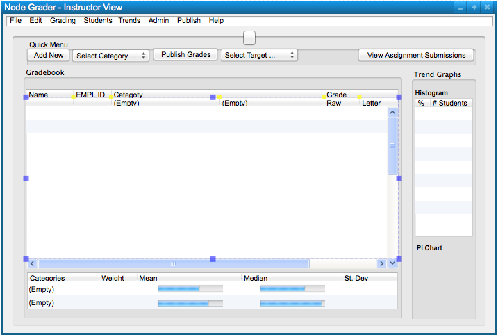

When the user initially invokes the Grader Manager and Browser, the screen appears as shown
in Figure 1.

Figure 1: Initial screen.
Figure 2 shows an expansion of the command menus.
Figure 2: Expanded command menus.
The File menu contains commands that output the current state of the grade book to disk and other endpoints. The 'File Save' command writes the current state of the grade book to disk-based storage. 'File Publish Student View' updates the grade book data that is visible to students. 'File Commit Final Grades' reports each student's final grade to the Office of the Registrar for official record keeping.
The Edit menu contains commands for manipulating the grade book. 'Edit Undo' reverts the most recent change that the user made since starting the application. The user may invoke undo multiple times to revert more that one change. 'Edit Redo' executes the change that undo last reverted. This command is only available when no changes have been made since invoking undo. Repeated invocations of 'Redo' will restore undone commands in the order they were given. 'Edit Cut' stores the current selection in the user's clipboard and removes it from the grade book. 'Edit Copy' stores the current selection in the user's clipboard. 'Edit Paste' inserts the user's clipboard into the grade book at currently selected edit point. This command is only available when the user's clipboard contains compatible data. 'Edit Delete' removes the current selection from the grade book. 'Edit Find' searches all grade books loaded into the application for a given text string. Successive invocations of search with an unchanged search string cause the program to search for additional occurrences of the string until all occurrences are found. 'Edit Clear' removes all data from a row or column in the grade book.
The Class menu provides commands for creating and managing classes. The 'Class New Class...' command allows the user to create a grade book for a new class. 'Class Manage Class...' allows the user to modify the class name, start date, end date, etc. 'Class Grade Schema' allows the user to change the class's grade schema. A grade schema defines how a numeric value for a grade maps to a letter grade like A, B, C, D, and F. 'Class Late Policy...' allows the user to change the class's late policy. A late policy defines the penalty applied to a grade for an assignment that is submitted late.
The Student menu contains commands for managing, deleting, adding, and grouping students in the class. 'Student Group Students' allows the user to group students together in a roster. 'Student Add Students' allows the user to add one or more students to the class. 'Student Manage Students' allows the user to manage student positions in the roster. 'Student Delete Student' allows the user to delete a student from the current class.
The Assignment menu contains commands for managing assignments. 'Assignment New Assignment...' allows the user to create an assignment in the current grade book. 'Assignment New Assignment Category...' allows the user to create a category of assignments in the current grade book.
The Graph menu contains commands for creating graphs and observing class trends. 'Graph Histogram' displays a larger histogram of the class's grade distribution. 'Graph Pie Chart' displays a pie chart showing the distribution of grades in the class.
The Help menu contains commands for displaying information about the Grade Manager and Browser. 'Help About' shows users the current version of the application.